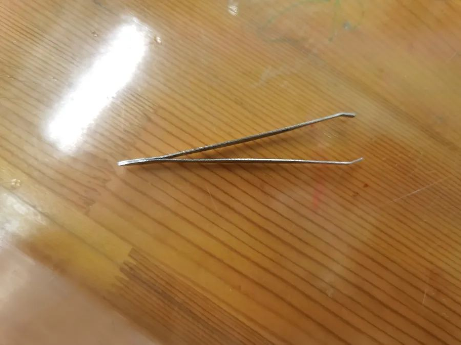
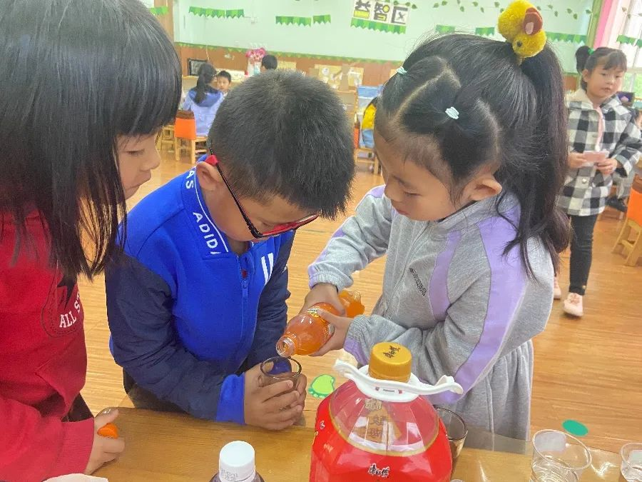
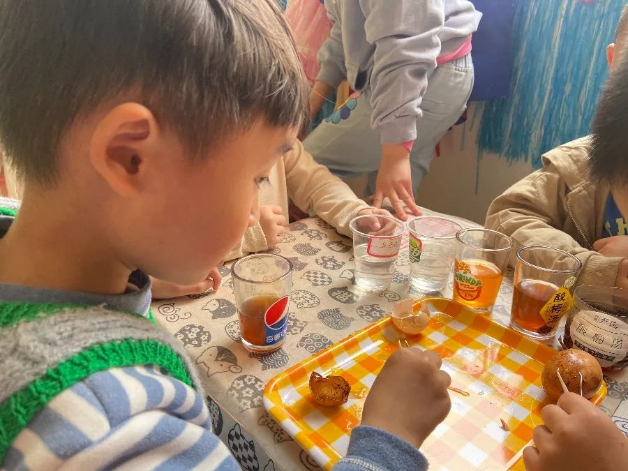
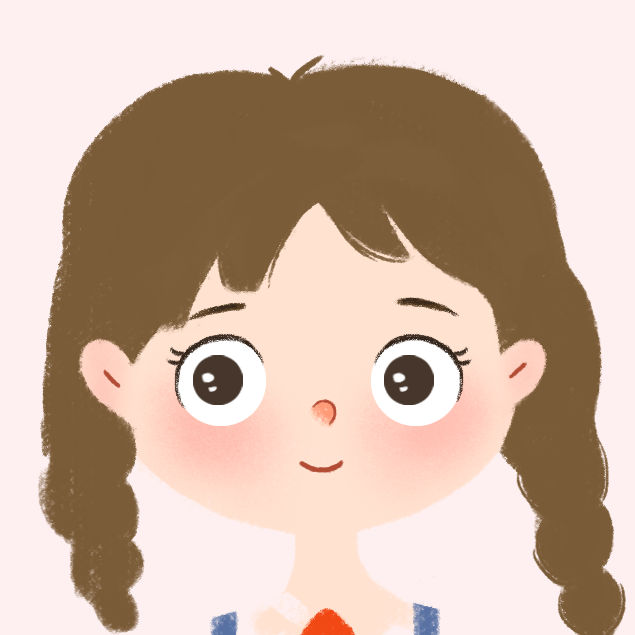
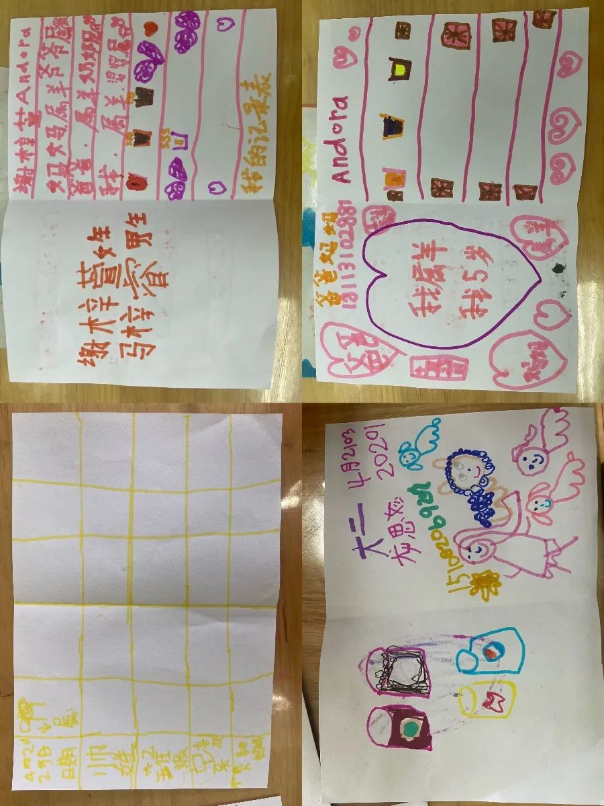
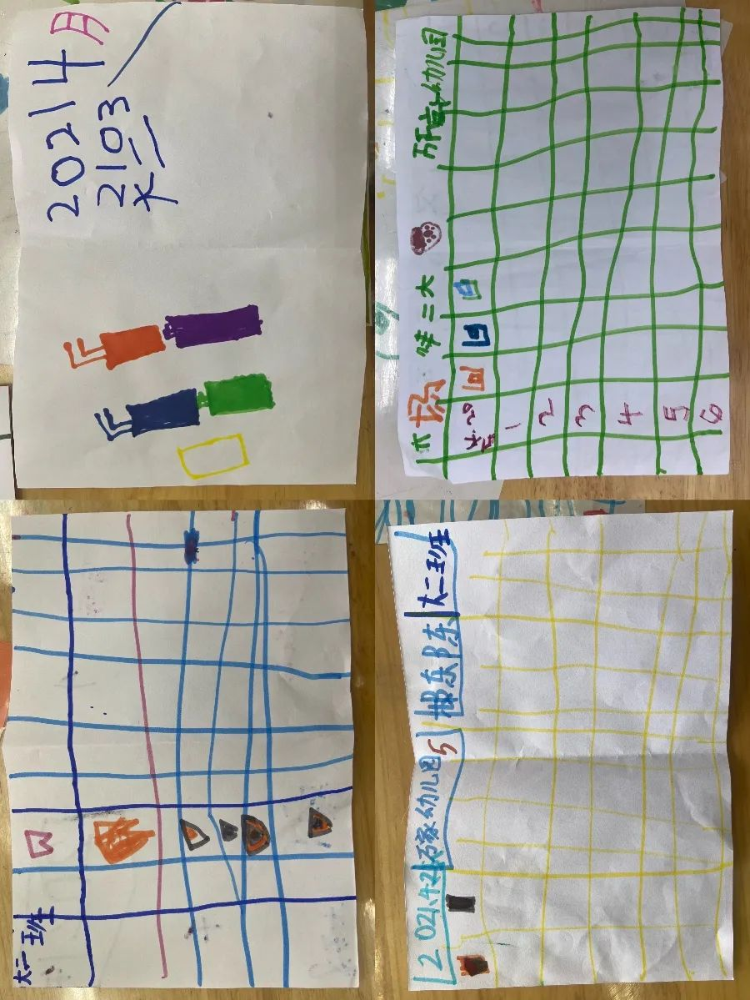

大二班 成都市双流区九江万家幼儿园 2021-05-21 19:05 发表于四川

点击上方蓝字 关注我们吧~

SUMMER
牙齿小实验


实验背景

在进行“我爱刷牙，牙齿棒棒”的活动中，孩子们知道了保护牙齿的重要性，对牙齿的探索越来越感兴趣了，于是他们决定做一次小实验，通过亲自实验了解保护牙齿应该怎么做，一起走进孩子的实验室吧…

实验准备


1、幼儿脱落乳牙 2、鸡蛋 3、鸡蛋壳



4、镊子5、空杯 6、饮料

实验过程

01
实验开始啦，孩子们把牙齿、鸡蛋、鸡蛋壳分别放入清水、饮料中进行浸泡。




< 左右滑动查看更多 >
02
看一看，摸一摸
咦！牙齿、鸡蛋壳、鸡蛋发生了什么变化？

< 左右滑动查看更多 >
童言童语


芬达里的牙齿变红了。

酸梅汁里的牙齿变黑了.



酸梅汁里的鸡蛋壳出现了裂纹。
好臭呀！是这些饮料发出的味道！


我们把这么有趣的现象记录下来吧。

那我们可以来画一画，该怎么画呢？


做一个观察记录表吧？




通过这次牙齿的实验，小朋友们对保护牙齿有了新的认识，原来鸡蛋壳就像我们的牙齿一样，我们平时一定要记得不能多喝饮料吃糖果，要早晚刷牙，保护好我们的牙齿！


图文|大二班
排版|李亚婷 陈露
审核|保教办


阅读 152
分享 收藏
6 3